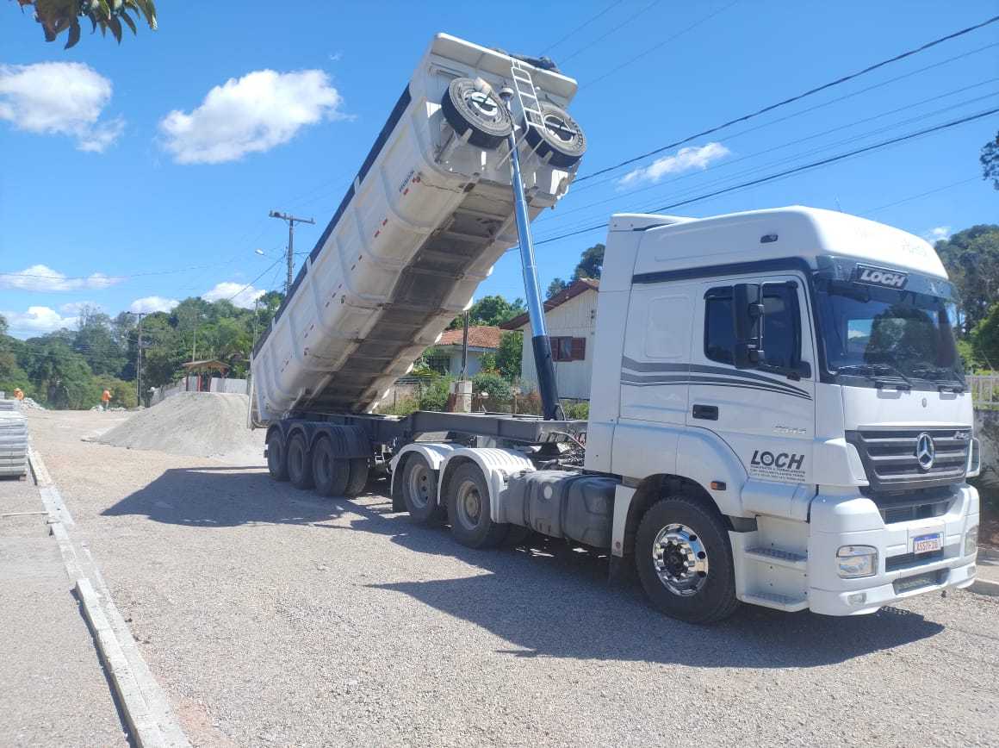
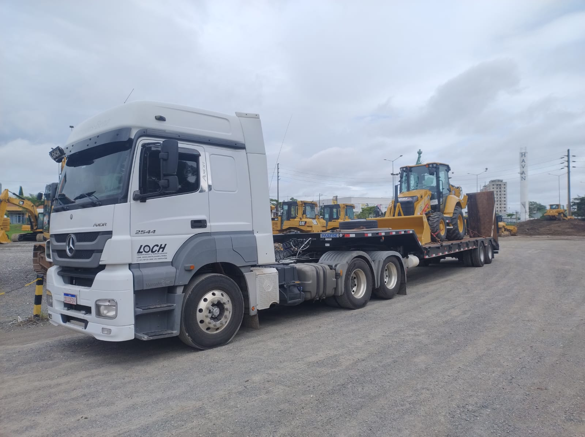
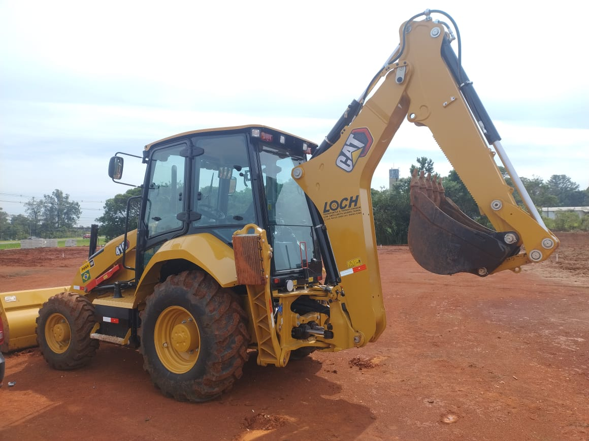
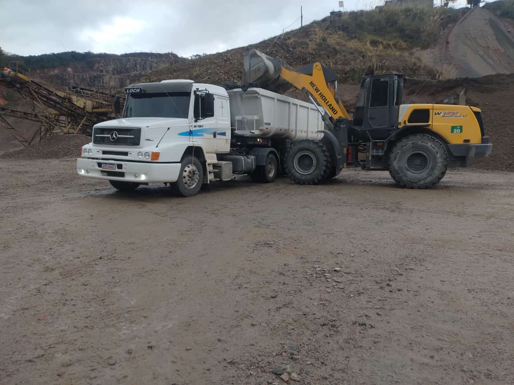

Loch Transportes
Oferecemos serviços especializados no transporte de máquinas e equipamentos pesados, além do fornecimento e transporte de agregados, como brita, areia e cascalho. Contamos com uma frota moderna e equipe experiente para garantir segurança, agilidade e eficiência no deslocamento de escavadeiras, tratores, rolos compactadores, motoniveladoras e muito mais.
Serviços
- Transporte de máquinas e equipamentos: Transporte de máquinas pesadas com segurança e agilidade.
- Transporte e comércio de agregados: Fornecimento e transporte de britas, areia e saibro em geral.
- Locação de máquinas, equipamentos e caminhões: Locação de uma vasta gama de equipamentos e caminhões para diversos tipos de serviços.
- Serviços de terraplanagem: Realização de serviços de terraplanagem para preparação de terrenos e obras de infraestrutura.



